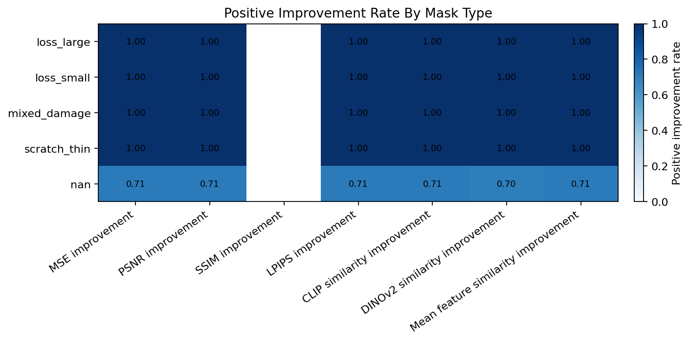
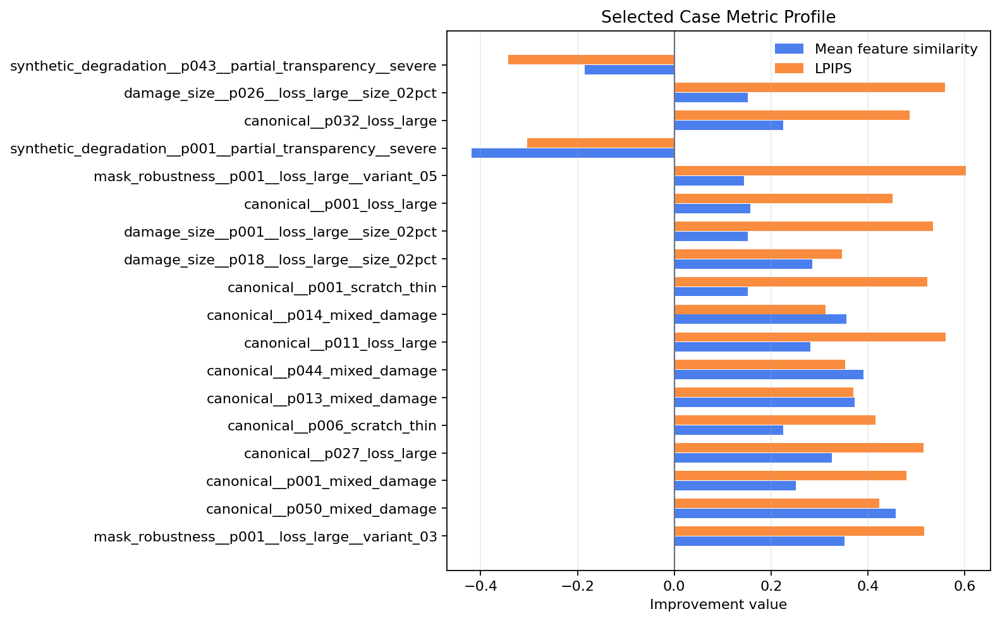
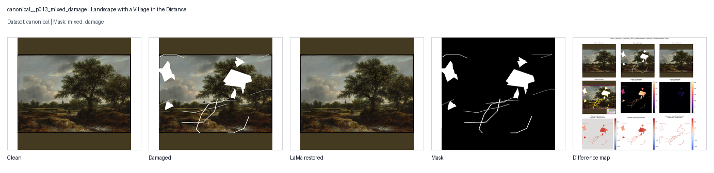
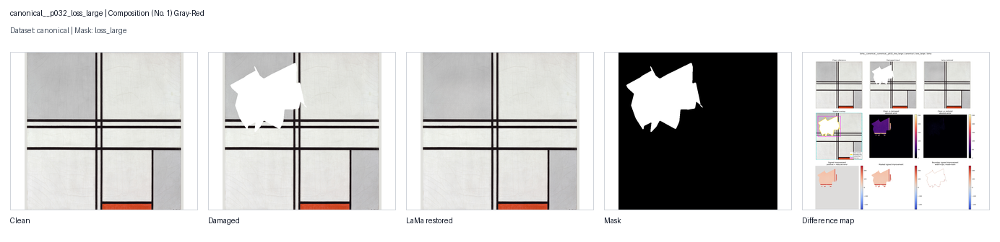
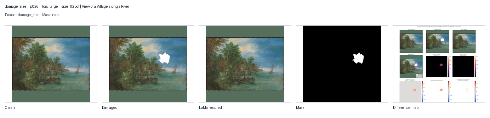

Notebook 19 synthesis report for LaMa restoration: paintings, plots, metrics, and compact interpretation.
Scope
This report consolidates the LaMa restoration dataframe, region-aware classical metrics,
LPIPS, feature similarity, selected source-image panels, and Notebook 16 difference maps.
Zero-control rows remain validation context and are excluded from the main diagnostic report.
item
value
Report cases
355.0000
Selected visual cases
18.0000
Selected cases with difference maps
18.0000
Datasets covered
4.0000
Mask types covered
4.0000
Painting categories covered
5.0000
Generated plots
7.0000
Generated selected-case panels
18.0000
Metric Overview
Positive values mean the restored image improved over the damaged image for the local report region.
The plots emphasize distribution, group sensitivity, and agreement between metric families.
metric
label
cases
mean
median
q25
q75
min
max
positive_rate
mse_improvement
MSE improvement
355.00000
24268.74328
25316.81506
14966.53248
34382.65942
-971.97314
54879.52778
0.87324
psnr_improvement
PSNR improvement
355.00000
15.44977
17.85810
13.55202
21.37723
-30.04171
35.43935
0.87324
lpips_improvement
LPIPS improvement
355.00000
0.24335
0.26127
0.16933
0.36294
-0.34296
0.60181
0.87324
clip_similarity_improvement
CLIP similarity improvement
355.00000
0.12169
0.12047
0.07058
0.17823
-0.38056
0.38546
0.87324
dinov2_similarity_improvement
DINOv2 similarity improvement
355.00000
0.11276
0.08332
0.03952
0.16420
-0.45581
0.67305
0.86761
mean_similarity_improvement
Mean feature similarity improvement
355.00000
0.11723
0.10681
0.06627
0.17473
-0.41819
0.45782
0.87324
Compact Findings
Mask-level perceptual behavior: strongest median lpips_improvement appears in loss_large (0.3298); weakest appears in loss_small (0.1834).
Mask-level feature behavior: strongest median mean_similarity_improvement appears in loss_large (0.1803); weakest appears in loss_small (0.0775).
Dataset-level feature behavior: strongest median mean_similarity_improvement appears in damage_size (0.1523); weakest appears in synthetic_degradation (-0.0044).
Category-level feature behavior: strongest median mean_similarity_improvement appears in landscape_natural (0.1568); weakest appears in abstraction_surrealism (0.0782).
18 selected cases were direct metric-priority cases; the rest preserve dataset, mask, category, and visual coverage.
Plot Gallery
Median and interquartile range for each available report metric.
Median metric improvement with IQR

Share of cases where each metric improves after LaMa restoration.
Positive improvement rate by mask type
Median mean feature-similarity improvement by dataset and mask type.
Dataset-mask mean similarity heatmap
Distribution of local LPIPS improvement across mask types.
LPIPS improvement by mask type
Correlation between classical, LPIPS, and feature-similarity improvement metrics.
Metric correlation heatmap
Relationship between mask_area_pixels and lpips_improvement.
Mask area versus metric improvement

LPIPS and feature-similarity improvement for the selected report cases.
These cases combine metric extremes, group coverage, and visual availability. Each panel shows
the clean source, damaged input, LaMa output, mask, and Notebook 16 difference-map evidence.
mask_robustness__p001__loss_large__variant_03: Juan de Pareja
Dataset: mask_robustness |
Category: portrait_figure |
Mask: nan
Why this case is included: Representative high-scoring category example; Representative high-scoring dataset example | Notebook 16 difference-map figure available
Clean, damaged, restored, mask, and difference-map evidence.
metric
value
MSE improvement
48786.02655
PSNR improvement
21.70411
SSIM improvement
LPIPS improvement
0.51639
CLIP similarity improvement
0.25977
DINOv2 similarity improvement
0.44325
Mean feature similarity improvement
0.35151
canonical__p050_mixed_damage: Landscape with a Sunlit Stream
Why this case is included: Representative high-scoring category example; Representative high-scoring dataset example; Strongest local feature-similarity improvement | Notebook 16 difference-map figure available
Clean, damaged, restored, mask, and difference-map evidence.
Why this case is included: Representative high-scoring category example; Strongest local feature-similarity improvement | Notebook 16 difference-map figure available

Clean, damaged, restored, mask, and difference-map evidence.
Why this case is included: Slowest restoration runtime | Notebook 16 difference-map figure available
Clean, damaged, restored, mask, and difference-map evidence.
metric
value
MSE improvement
48373.38629
PSNR improvement
19.35762
SSIM improvement
LPIPS improvement
0.45127
CLIP similarity improvement
0.13921
DINOv2 similarity improvement
0.17482
Mean feature similarity improvement
0.15702
mask_robustness__p001__loss_large__variant_05: Juan de Pareja
Dataset: mask_robustness |
Category: portrait_figure |
Mask: nan
Why this case is included: Strongest local LPIPS improvement | Notebook 16 difference-map figure available
Clean, damaged, restored, mask, and difference-map evidence.
metric
value
MSE improvement
42835.93363
PSNR improvement
25.82036
SSIM improvement
LPIPS improvement
0.60181
CLIP similarity improvement
0.11128
DINOv2 similarity improvement
0.17676
Mean feature similarity improvement
0.14402
synthetic_degradation__p001__partial_transparency__severe: Juan de Pareja
Dataset: synthetic_degradation |
Category: portrait_figure |
Mask: nan
Why this case is included: Weakest local LPIPS improvement; Weakest local MSE improvement; Weakest local feature-similarity improvement | Notebook 16 difference-map figure available
Clean, damaged, restored, mask, and difference-map evidence.
Why this case is included: Representative high-scoring category example | Notebook 16 difference-map figure available

Clean, damaged, restored, mask, and difference-map evidence.
metric
value
MSE improvement
7888.23919
PSNR improvement
21.63480
SSIM improvement
LPIPS improvement
0.48629
CLIP similarity improvement
0.08925
DINOv2 similarity improvement
0.36138
Mean feature similarity improvement
0.22532
damage_size__p026__loss_large__size_02pct: View of a Village along a River
Dataset: damage_size |
Category: architecture_structured |
Mask: nan
Why this case is included: Strongest local LPIPS improvement | Notebook 16 difference-map figure available

Clean, damaged, restored, mask, and difference-map evidence.
metric
value
MSE improvement
14714.07824
PSNR improvement
26.22841
SSIM improvement
LPIPS improvement
0.55901
CLIP similarity improvement
0.22439
DINOv2 similarity improvement
0.08016
Mean feature similarity improvement
0.15228
synthetic_degradation__p043__partial_transparency__severe: The Card Players
Dataset: synthetic_degradation |
Category: high_texture_brushwork |
Mask: nan
Why this case is included: Weakest local LPIPS improvement; Weakest local MSE improvement; Weakest local feature-similarity improvement | Notebook 16 difference-map figure available
Clean, damaged, restored, mask, and difference-map evidence.
metric
value
MSE improvement
-670.75873
PSNR improvement
-3.47428
SSIM improvement
LPIPS improvement
-0.34296
CLIP similarity improvement
-0.19061
DINOv2 similarity improvement
-0.17955
Mean feature similarity improvement
-0.18508
Report Reading Notes
Treat this as a synthesis report, not a final thesis conclusion. The useful reading pattern is:
inspect metric direction first, then check whether the selected painting panel supports that signal.
Cases where metric families disagree should be carried forward into grouping and risk-flag notebooks.